Scatterplots & Correlations (In-class Practice)
Yuriy Davydenko
February 19, 2020
For those who prefer to work with RCloud, a project with the same materials can be accessed using the following link:
Datasets for this class:
- Motor Trend Car Road Tests:
mtcarsfrom packagedatasets
The data was extracted from the 1974 Motor Trend US magazine, and comprises fuel consumption and 10 aspects of automobile design and performance for 32 automobiles (1973-74 models).
To load, run:
data(mtcars)To get more info about the dataset, run:
?mtcarsCheck all the built-in dataset by running:
library(help = "datasets")
- A random sample of 1,000 federal personnel records for March 1994:
Load Libraries and Set Working directory
library(dplyr) # for maipultaing the dataset using commands %>%, select(), filter() etc.
library(ggplot2) # graphics
setwd(".")
1. mtcars dataset
Load a Dataset into R Environment and Examine its Structure
data(mtcars)
names(mtcars)## [1] "mpg" "cyl" "disp" "hp" "drat" "wt" "qsec" "vs" "am" "gear"
## [11] "carb"str(mtcars)## 'data.frame': 32 obs. of 11 variables:
## $ mpg : num 21 21 22.8 21.4 18.7 18.1 14.3 24.4 22.8 19.2 ...
## $ cyl : num 6 6 4 6 8 6 8 4 4 6 ...
## $ disp: num 160 160 108 258 360 ...
## $ hp : num 110 110 93 110 175 105 245 62 95 123 ...
## $ drat: num 3.9 3.9 3.85 3.08 3.15 2.76 3.21 3.69 3.92 3.92 ...
## $ wt : num 2.62 2.88 2.32 3.21 3.44 ...
## $ qsec: num 16.5 17 18.6 19.4 17 ...
## $ vs : num 0 0 1 1 0 1 0 1 1 1 ...
## $ am : num 1 1 1 0 0 0 0 0 0 0 ...
## $ gear: num 4 4 4 3 3 3 3 4 4 4 ...
## $ carb: num 4 4 1 1 2 1 4 2 2 4 ...1.1 Scatterpolts for variables in mtcars dataset
Scatterplot for car mpg against weight (wt ~ mpg) using base graphics:
plot(x = mtcars$wt, y = mtcars$mpg) # or you can type: plot(mtcars$mpg ~ mtcars$wt)
Scatterplot for car mpg against weight (wt ~ mpg) using ggplot:
ggplot(data = mtcars, mapping = aes(x = wt, y = mpg )) + geom_point()
Adding another dimension: same scatterplot broken down by am (transmission type: 0 = auto, 1 = manual)
ggplot(data = mtcars, mapping = aes(x = wt, y = mpg, col = factor(am))) + geom_point()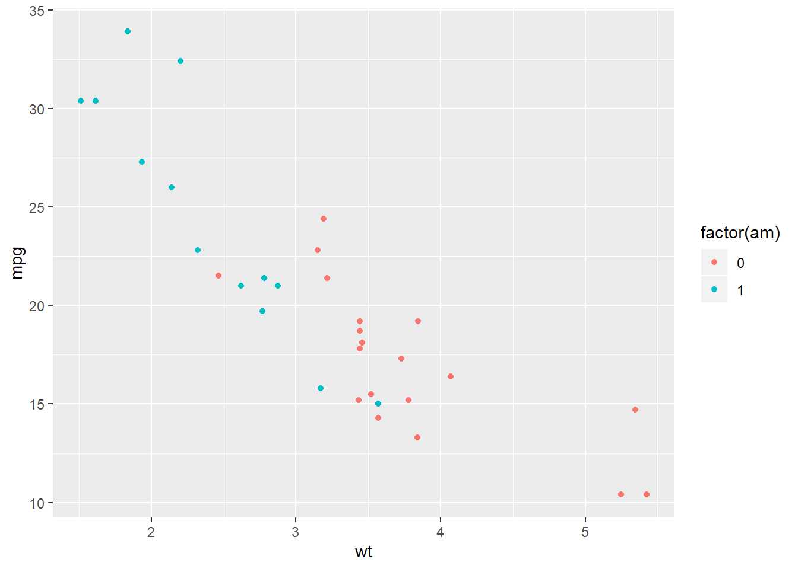
Scatterplot for car mpg against am:
ggplot(data = mtcars) + geom_point(mapping = aes(x = factor(am), y = mpg, col = factor(am) ))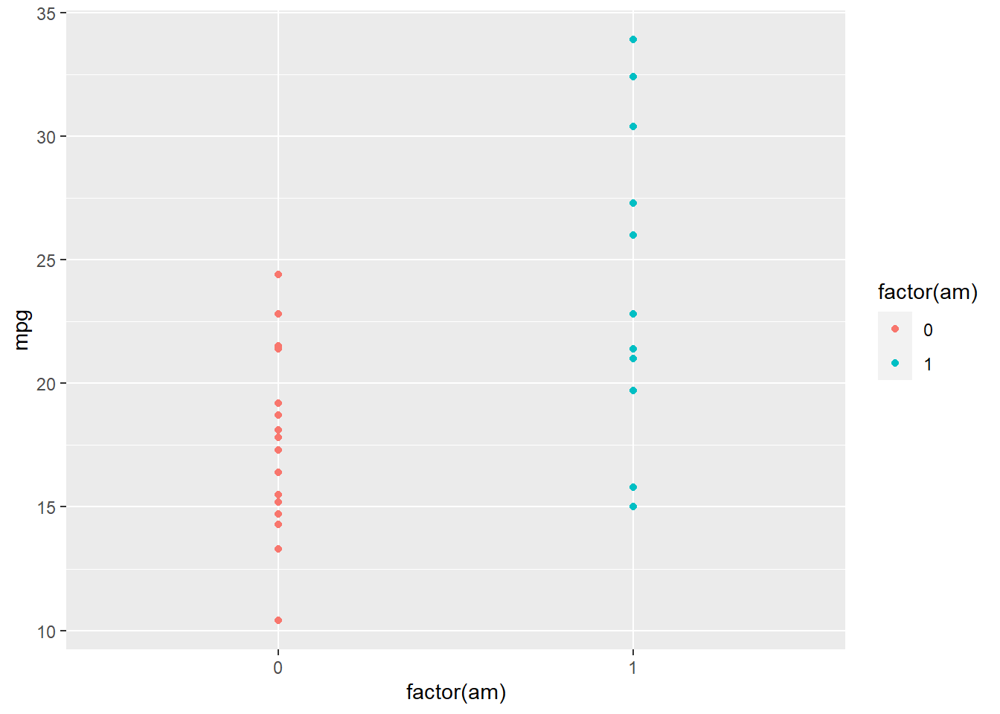
Boxplot for car mpg against am:
ggplot(data = mtcars, mapping = aes(x = factor(am), y = mpg, col = factor(am))) + geom_boxplot()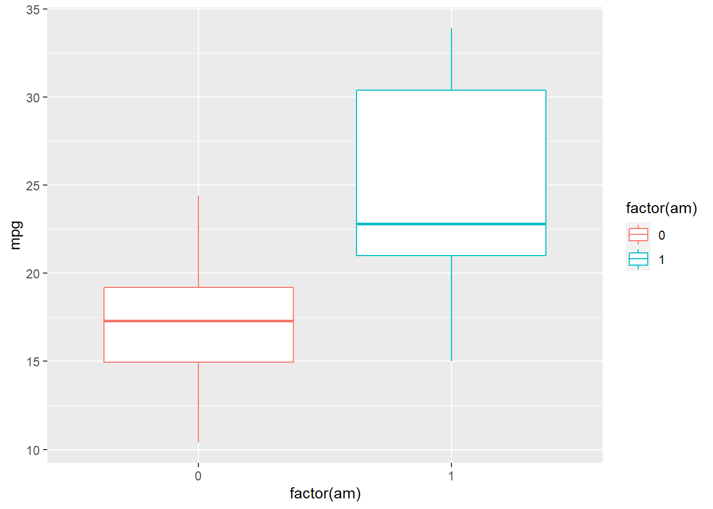
1.2. Correlation Matrix for mtcars Dataset
Basic correlation matrix using cor() for select variables using select():
mtcars %>% select(mpg, cyl, disp, hp, wt, am) %>% cor(use = "pairwise.complete.obs") %>% round(2)## mpg cyl disp hp wt am
## mpg 1.00 -0.85 -0.85 -0.78 -0.87 0.60
## cyl -0.85 1.00 0.90 0.83 0.78 -0.52
## disp -0.85 0.90 1.00 0.79 0.89 -0.59
## hp -0.78 0.83 0.79 1.00 0.66 -0.24
## wt -0.87 0.78 0.89 0.66 1.00 -0.69
## am 0.60 -0.52 -0.59 -0.24 -0.69 1.00A more advanced solution using ggplot family of libraries (GGally):
- don’t forget to install the library if it’s not yet installed
#install.packages("GGally")
library(GGally)
mtcars %>% select(mpg, cyl, disp, hp, wt, am) %>% ggpairs()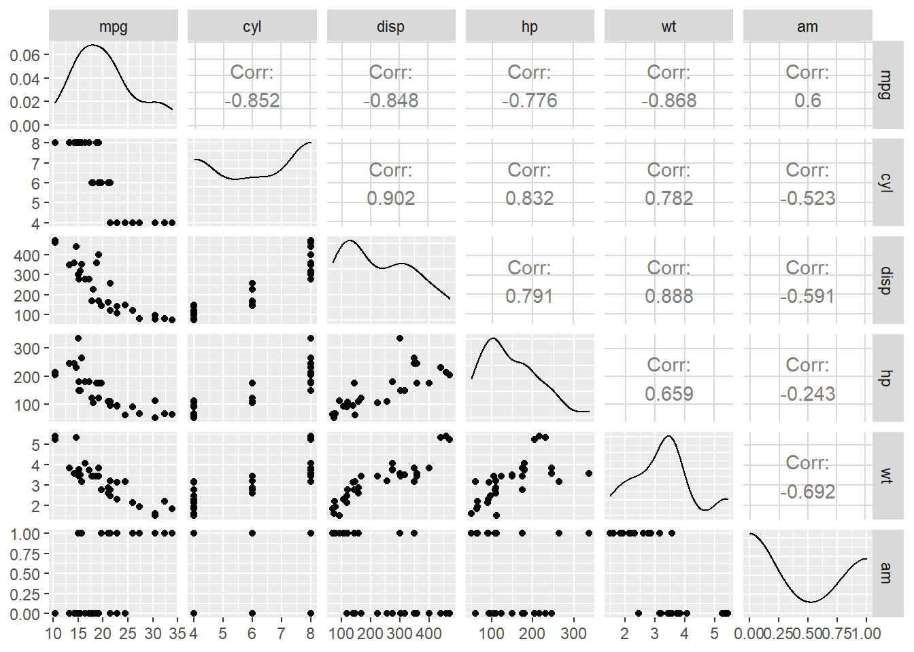
2. OPM94 dataset
Load Dataset and Check its Structure:
load("Datasets/OPM94.RData")
str(opm94)## 'data.frame': 1000 obs. of 23 variables:
## $ x : int 1 2 3 4 5 6 7 8 9 10 ...
## $ sal : int 26045 37651 64926 18588 19573 28648 27805 16560 40440 24285 ...
## $ grade : int 7 9 14 4 3 9 7 3 11 6 ...
## $ patco : Factor w/ 5 levels "Administrative",..: 1 4 4 2 2 4 5 2 1 2 ...
## $ major : Factor w/ 23 levels " ","AGRIC",..: 16 11 10 1 1 11 1 1 1 6 ...
## $ age : int 52 34 37 26 51 44 50 37 59 57 ...
## $ male : Factor w/ 2 levels "female","male": 1 1 1 1 1 1 1 1 1 1 ...
## $ vet : Factor w/ 2 levels "no","yes": 1 1 1 1 1 1 1 1 2 1 ...
## $ handvet : Factor w/ 2 levels "no","yes": 1 1 1 1 1 1 1 1 1 1 ...
## $ hand : Factor w/ 2 levels "no","yes": 2 1 1 1 1 1 1 1 1 1 ...
## $ yos : int 6 4 3 6 14 1 7 5 13 6 ...
## $ edyrs : int 16 16 16 12 12 16 14 12 12 14 ...
## $ promo : Factor w/ 2 levels "no","yes": 2 1 1 1 NA 1 1 1 1 1 ...
## $ exit : Factor w/ 2 levels "no","yes": 1 1 1 1 2 1 1 1 1 1 ...
## $ supmgr : Factor w/ 2 levels "no","yes": 1 1 1 1 1 1 1 1 1 1 ...
## $ race : Factor w/ 5 levels "American Indian",..: 2 2 2 2 2 2 2 2 2 2 ...
## $ minority: int 1 1 1 1 1 1 1 1 1 1 ...
## $ grade4 : Factor w/ 4 levels "grades 1 to 4",..: 3 4 2 1 1 4 3 1 4 3 ...
## $ promo01 : num 1 0 0 0 NA 0 0 0 0 0 ...
## $ supmgr01: num 0 0 0 0 0 0 0 0 0 0 ...
## $ male01 : num 0 0 0 0 0 0 0 0 0 0 ...
## $ exit01 : num 0 0 0 0 1 0 0 0 0 0 ...
## $ vet01 : num 0 0 0 0 0 0 0 0 1 0 ...2.1. Correlation Matrix
Correlation matrix for select interval level variables:
opm94 %>% select(sal, grade, edyrs, yos ) %>% cor(use = "pairwise.complete.obs") %>% round(2)## sal grade edyrs yos
## sal 1.00 0.91 0.59 0.40
## grade 0.91 1.00 0.61 0.31
## edyrs 0.59 0.61 1.00 0.01
## yos 0.40 0.31 0.01 1.00Correlation matrix with binary variables:
opm94 %>% select(sal, male01, vet01, promo01, supmgr01, minority) %>% cor(use = "pairwise.complete.obs") %>% round(2)## sal male01 vet01 promo01 supmgr01 minority
## sal 1.00 0.36 0.14 -0.15 0.52 -0.23
## male01 0.36 1.00 0.42 -0.07 0.18 -0.12
## vet01 0.14 0.42 1.00 -0.07 0.11 -0.02
## promo01 -0.15 -0.07 -0.07 1.00 -0.08 0.04
## supmgr01 0.52 0.18 0.11 -0.08 1.00 -0.09
## minority -0.23 -0.12 -0.02 0.04 -0.09 1.002.2. Scatterplots
Salary ~ Grade:
ggplot(data = opm94, aes(x = grade, y = sal)) + geom_point()## Warning: Removed 5 rows containing missing values (geom_point).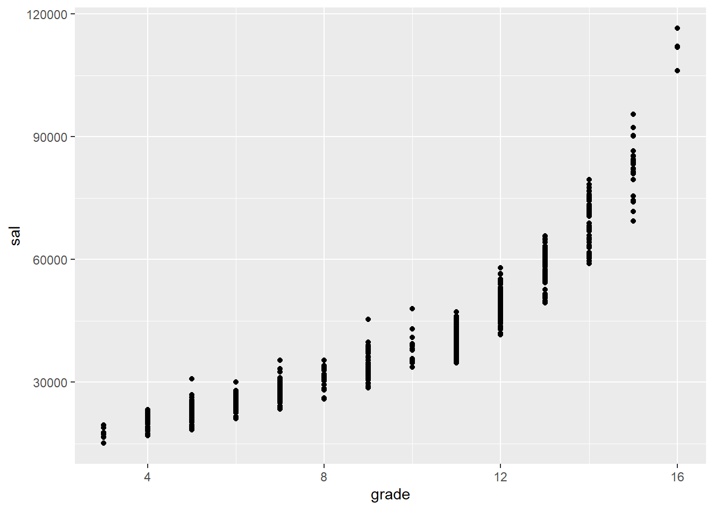
ggplot(data = opm94, aes(x = grade, y = sal, color = male)) + geom_point()## Warning: Removed 5 rows containing missing values (geom_point).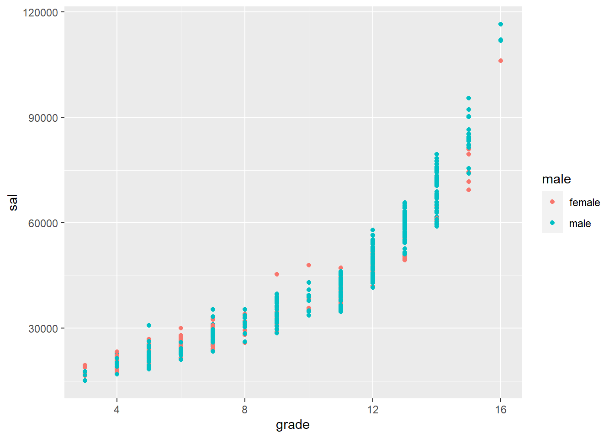
Salary ~ edyrs:
ggplot(data = opm94, aes(x = edyrs, y = sal)) + geom_point()## Warning: Removed 5 rows containing missing values (geom_point).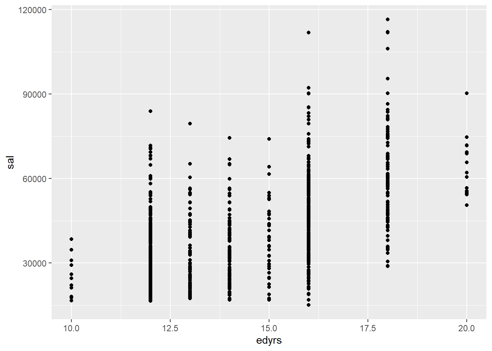
ggplot(data = opm94, aes(x = edyrs, y = sal, color = male)) + geom_point()## Warning: Removed 5 rows containing missing values (geom_point).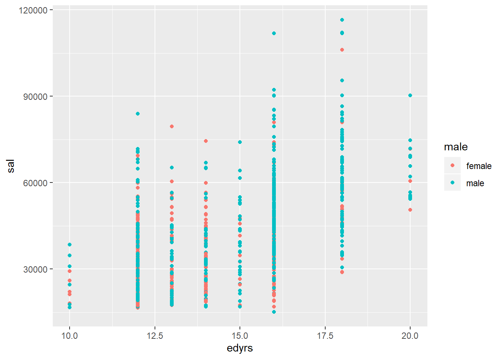
Salary ~ yos:
ggplot(data = opm94, aes(x = yos, y = sal)) + geom_point()## Warning: Removed 5 rows containing missing values (geom_point).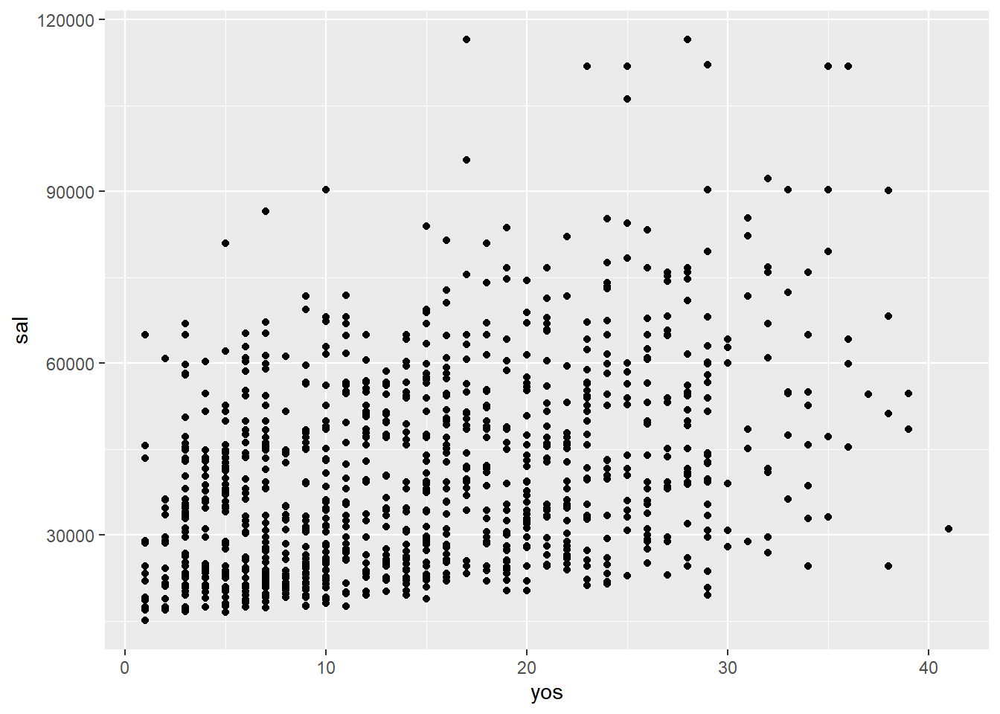
ggplot(data = opm94, aes(x = yos, y = sal, color = male)) + geom_point()## Warning: Removed 5 rows containing missing values (geom_point).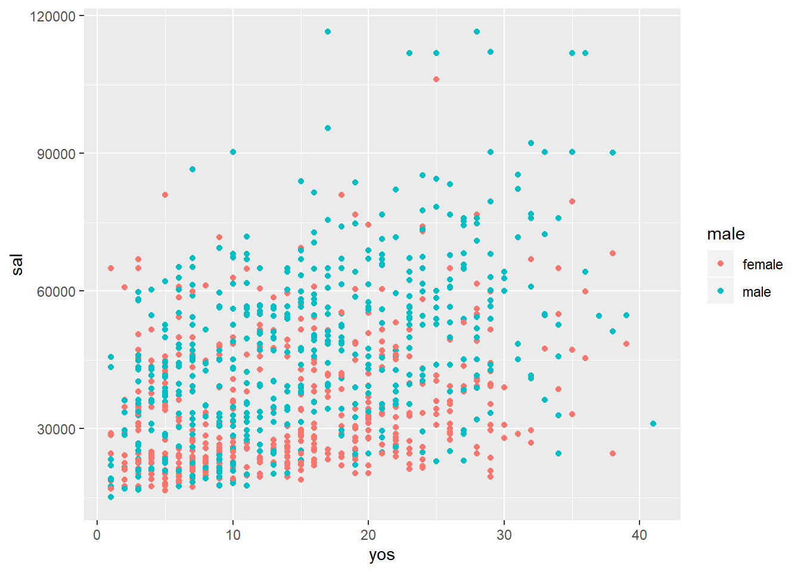
Salary ~ male:
ggplot(data = opm94, aes(x = male, y = sal)) + geom_point()## Warning: Removed 5 rows containing missing values (geom_point).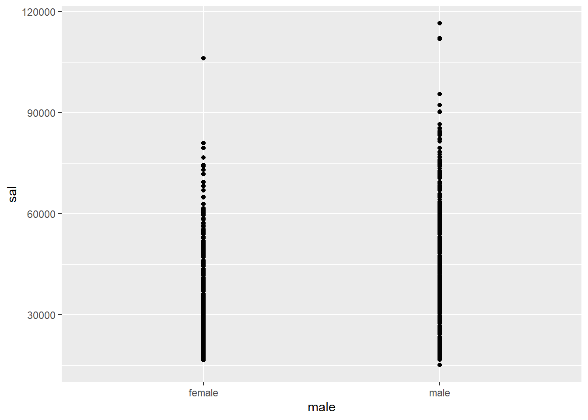
ggplot(data = opm94, aes(x = male, y = sal)) + geom_boxplot()## Warning: Removed 5 rows containing non-finite values (stat_boxplot).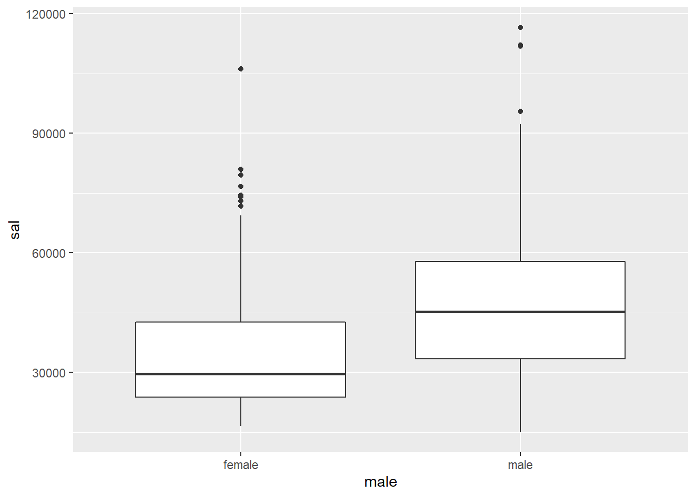
Salary ~ supmgr:
ggplot(data = opm94, aes(x = supmgr, y = sal)) + geom_point()## Warning: Removed 5 rows containing missing values (geom_point).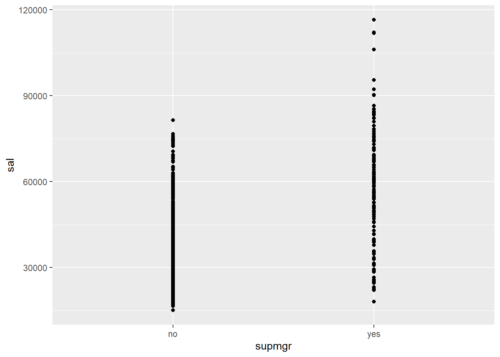
ggplot(data = opm94, aes(x = supmgr, y = sal)) + geom_boxplot()## Warning: Removed 5 rows containing non-finite values (stat_boxplot).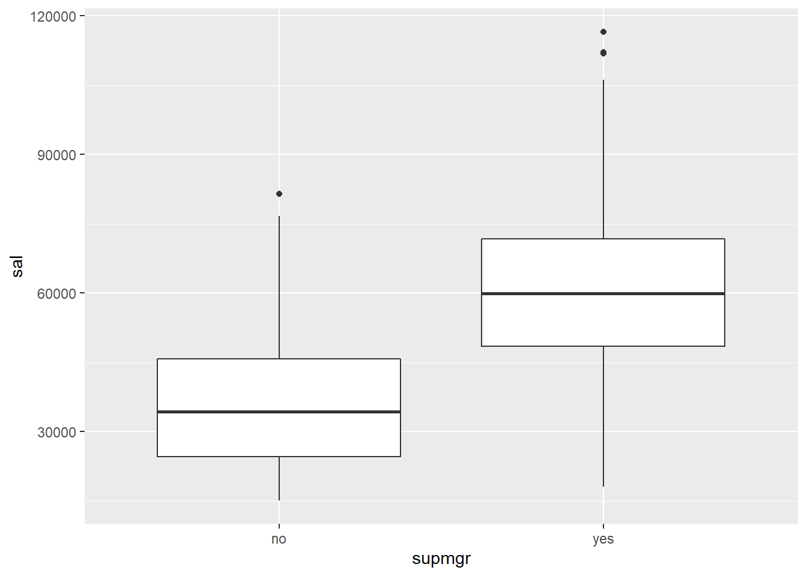
Salary ~ minority:
ggplot(data = opm94, aes(x = factor(minority), y = sal)) + geom_point()## Warning: Removed 5 rows containing missing values (geom_point).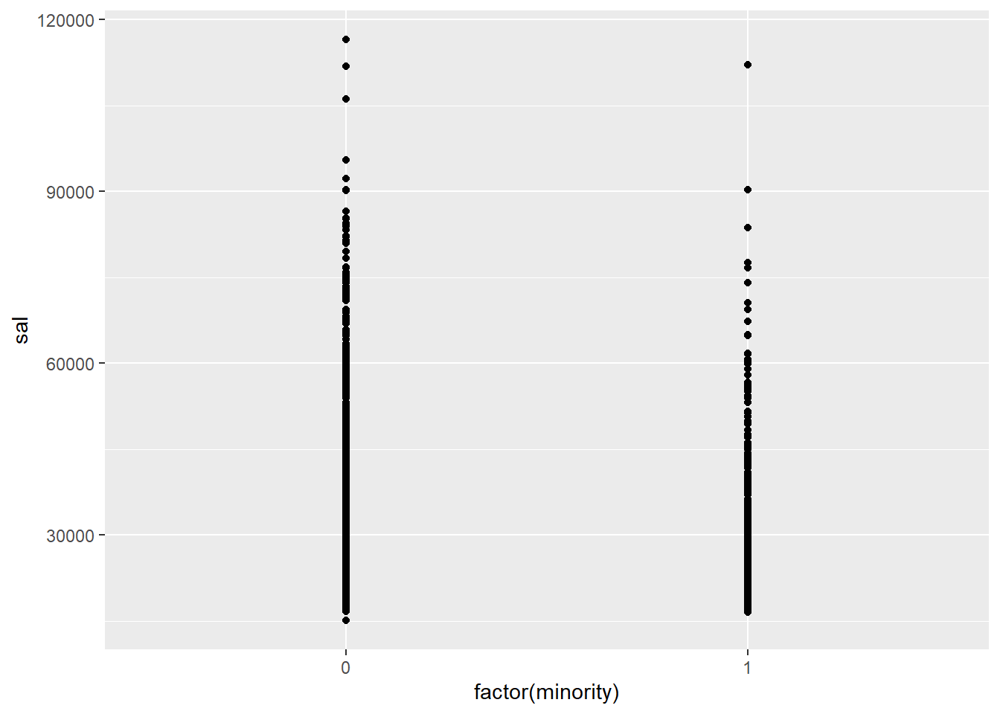
ggplot(data = opm94, aes(x = factor(minority), y = sal)) + geom_boxplot()## Warning: Removed 5 rows containing non-finite values (stat_boxplot).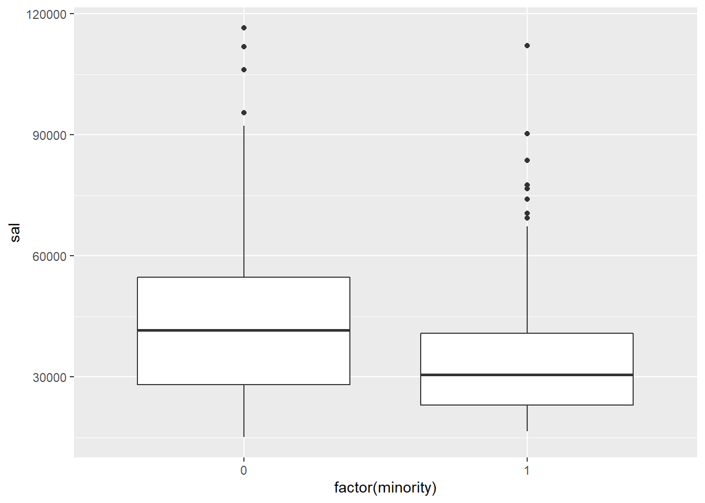
Yuriy Davydenko © 2020